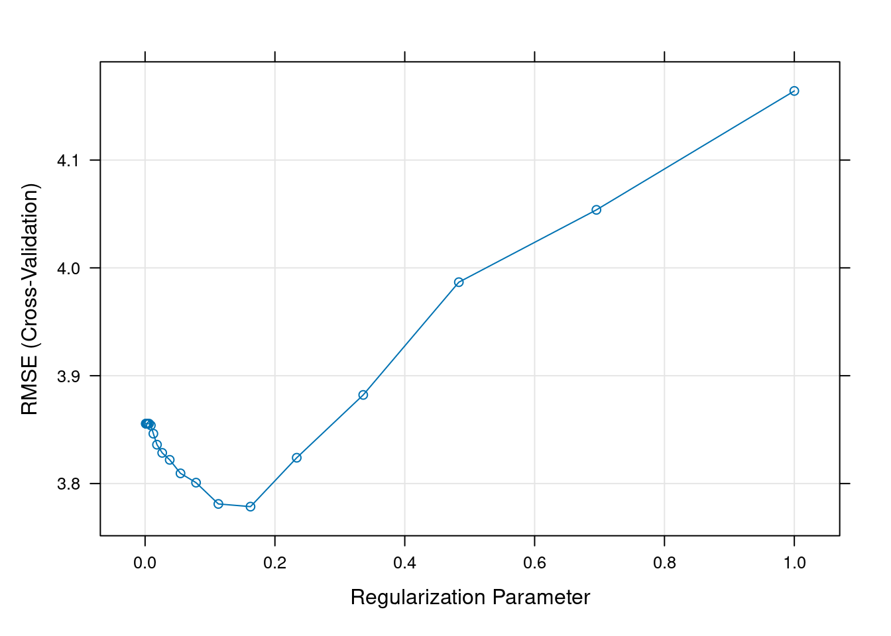

Code
library(caret)
library(glmnet)PS3192 25-26
In this session we work with the California Housing dataset. We will use a training set to fit regularised regression models, and a test set to evaluate generalisation.
library(caret)
library(glmnet)Load the training and test data:
d_train <- read.csv("california_housing_train.csv")
d_test <- read.csv("california_housing_test.csv")Inspect the data structure and variables:
str(d_train)'data.frame': 100 obs. of 15 variables:
$ lon : num -71.1 -71.1 -71 -71.1 -71.1 ...
$ lat : num 42.2 42.2 42.2 42.2 42.2 ...
$ medv : num 22.5 46.7 11.3 25 33.2 36 17.5 22.5 21.8 36.1 ...
$ crim : num 0.252 0.298 9.187 0.198 0.105 ...
$ zn : num 0 0 0 0 40 20 0 0 0 33 ...
$ indus : num 10.59 6.2 18.1 10.59 6.41 ...
$ chas : int 0 0 0 0 1 0 0 0 0 0 ...
$ nox : num 0.489 0.504 0.7 0.489 0.447 0.647 0.442 0.449 0.532 0.472 ...
$ rm : num 5.78 7.69 5.54 6.18 7.27 ...
$ age : num 72.7 17 100 42.4 49 100 48.5 45.1 40.3 41.1 ...
$ dis : num 4.35 3.38 1.58 3.95 4.79 ...
$ rad : int 4 8 24 4 4 5 3 3 24 7 ...
$ tax : int 277 307 666 277 254 264 352 247 666 222 ...
$ ptratio: num 18.6 17.4 20.2 18.6 17.6 13 18.8 18.5 20.2 18.4 ...
$ lstat : num 18.06 3.92 23.6 9.47 6.05 ...summary(d_train$medv) Min. 1st Qu. Median Mean 3rd Qu. Max.
5.00 18.38 22.55 24.02 28.30 50.00 Regularisation modifies the regression loss function by adding a penalty term:
\[\text{Loss} = \underbrace{\frac{1}{n} \sum_{i=1}^{n} \left(y_i - \hat y_i \right)^2}_{\text{mean squared error}} \, + \, \underbrace{\lambda \left[ \alpha \sum |\boldsymbol{\beta}| + (1-\alpha) \sum \boldsymbol{\beta}^2 \right]}_{\text{penalty}}\]
alpha = 1 gives lasso (L1 penalty)alpha = 0 gives ridge (L2 penalty)lambda controls the strength of the penaltyWe will use 5-fold cross-validation to select the best value of lambda.
set.seed(123)
ctrl <- trainControl(
method = "cv",
number = 5
)
lasso_grid <- expand.grid(
alpha = 1,
lambda = 10^seq(-3, 0, length = 20)
)
lasso_fit <- train(
medv ~ .,
data = d_train,
method = "glmnet",
trControl = ctrl,
tuneGrid = lasso_grid
)Check the selected penalty and the fitted coefficients:
lasso_fitglmnet
100 samples
14 predictor
No pre-processing
Resampling: Cross-Validated (5 fold)
Summary of sample sizes: 80, 80, 80, 80, 80
Resampling results across tuning parameters:
lambda RMSE Rsquared MAE
0.001000000 3.855523 0.8457366 3.090200
0.001438450 3.855523 0.8457366 3.090200
0.002069138 3.855523 0.8457366 3.090200
0.002976351 3.855523 0.8457366 3.090200
0.004281332 3.855523 0.8457366 3.090200
0.006158482 3.855523 0.8457366 3.090200
0.008858668 3.853920 0.8458703 3.087570
0.012742750 3.846230 0.8466145 3.078447
0.018329807 3.836021 0.8475982 3.064572
0.026366509 3.828433 0.8484769 3.047127
0.037926902 3.821960 0.8493356 3.025134
0.054555948 3.809419 0.8505925 3.003389
0.078475997 3.800814 0.8517747 2.996609
0.112883789 3.781065 0.8536062 2.976237
0.162377674 3.778573 0.8545915 2.974761
0.233572147 3.823908 0.8526086 3.012845
0.335981829 3.882167 0.8512063 3.067952
0.483293024 3.986748 0.8463456 3.125017
0.695192796 4.053819 0.8438061 3.144953
1.000000000 4.164101 0.8414761 3.179623
Tuning parameter 'alpha' was held constant at a value of 1
RMSE was used to select the optimal model using the smallest value.
The final values used for the model were alpha = 1 and lambda = 0.1623777.lasso_fit$bestTune alpha lambda
15 1 0.1623777coef(lasso_fit$finalModel, lasso_fit$bestTune$lambda)15 x 1 sparse Matrix of class "dgCMatrix"
s=0.1623777
(Intercept) -4.998482e+02
lon -5.690586e+00
lat 1.950817e+00
crim -5.373517e-02
zn .
indus .
chas 1.886902e+00
nox .
rm 8.392875e+00
age -5.958656e-02
dis -5.635307e-01
rad .
tax -9.308073e-03
ptratio -2.086921e-01
lstat -2.753088e-01Visualise performance across lambda values:
plot(lasso_fit)
pred_lasso <- predict(lasso_fit, newdata = d_test)
mse_lasso <- mean((d_test$medv - pred_lasso)^2)
mse_lasso[1] 35.96986Now fit a ridge model. In this example we use a smaller subset of predictors (as in the script), but you can try medv ~ . as an extension exercise.
set.seed(123)
ridge_grid <- expand.grid(
alpha = 0,
lambda = 10^seq(-3, 0, length = 20)
)
ridge_fit <- train(
medv ~ .,
data = d_train,
method = "glmnet",
trControl = ctrl,
tuneGrid = ridge_grid
)Check the selected penalty and coefficients:
ridge_fit$bestTune alpha lambda
19 0 0.6951928coef(ridge_fit$finalModel, ridge_fit$bestTune$lambda)15 x 1 sparse Matrix of class "dgCMatrix"
s=0.6951928
(Intercept) -7.805407e+02
lon -7.829081e+00
lat 5.299607e+00
crim -7.351133e-02
zn -5.918402e-03
indus -4.869266e-02
chas 2.726680e+00
nox -4.734723e-01
rm 7.213308e+00
age -5.770060e-02
dis -6.808474e-01
rad 4.773746e-02
tax -9.073281e-03
ptratio -4.083712e-01
lstat -3.355277e-01Plot the cross-validated performance:
plot(ridge_fit)
pred_ridge <- predict(ridge_fit, newdata = d_test)
mse_ridge <- mean((d_test$medv - pred_ridge)^2)
mse_ridge[1] 32.25136Answer these short questions:
rm^2) as an additional predictor.Optional extension: try an elastic net by setting alpha between 0 and 1 (e.g., 0.25, 0.5, 0.75).
elastic_grid <- expand.grid(
alpha = seq(0, 1, by = 0.25),
lambda = 10^seq(-3, 1, length = 20)
)